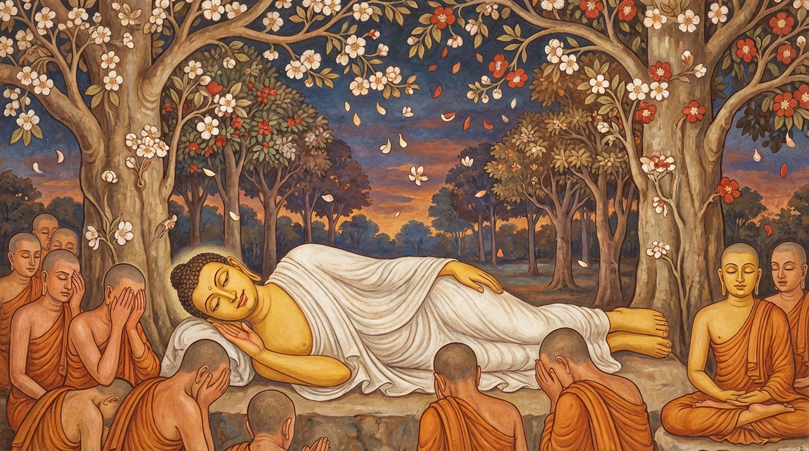

පරිනිර්වාණය කරා ගමන
මෙසේ ලෝ වැඩ කළා වූ ශාස්තෘ වූ බුදුරජාණන් වහන්සේගේ පිරිනිවන් පෑමට දස මාසයක් කල් ඉතිරිව තිබියදී, යට කියන ලද නිශ්චිත වාසයක් නොමැතිව වැඩ සිටි අන්තිම තුන් අවුරුද්ද අතුරෙන් කෙළවර පන්සාළිස් වන වස විශාලා මහනුවර සමීපයෙහි වූ බෙලුවගම වස් වසා වැඩ වාසය කරන ලදී. එහි දී උපන් රෝගාබාධය සමාපත්ති බලයෙන් නවත්වා වස් අවසානයෙහි භික්ෂු සංඝයා පිරිවරා සැවැත් නුවර ජේතවනාරාමයට වැඩ, එහි දී අග්ර ශ්රාවක සැරියුත් මුගලන් දෙදෙනා වහන්සේට පිරිනිවන් පෑමට අවසර දී, ඒ දෙදෙනා වහන්සේගේ පරිනිර්වාණය පිළිබඳ වූ ධර්ම දේශනා කොට, එයින් නික්ම භික්ෂු සංඝයා පිරිවරා නැවත විශාලා මහනුවරටම වැඩ, චාපාල චෛත්යය නම් විහාරයෙහි දී ආයු සංස්කාරය අත්හැරි ක්ෂණයෙහිම මහා පෘථිවිය කම්පා විය.
එකල්හි ආයුෂ්මත් ආනන්ද ස්ථවිරයන් වහන්සේ බුදුන් සමීපයට පැමිණ එකත්පස්ව හිඳ, “ස්වාමීනි, දැන් මේ භයානක වූ පෘථිවි කම්පාව වීමට කාරණා කවරේද? ඒ මට වදාළ මැනවැ” යි ආරාධනා කළ කල්හි, බුදුරජාණන් වහන්සේ, “ආනන්දය, ධාතු ක්ෂෝභයෙන් ද, පින්වතුන්ගේ සෘද්ධ්යානුභාවයෙන් ද, මහ බෝසතාණන්ගේ මව් කුස ඉපදීමෙහි ද, එයින් නික්මීමෙහි ද, බුදුවීමෙහි ද, මංගල ධර්ම දේශනාවෙහි ද, සර්වඥවරයන්ගේ ආයු සංස්කාරය හැරීමෙහි ද, සර්වඥවරයන්ගේ පිරිනිවන් පෑමෙහි දැ” යි යන මේ අට කාරණයෙන් පෘථිවිය කම්පා වන්නේ යැයි වදාළ සේක. එපමණින් ආනන්ද ස්ථවිරයන් වහන්සේ, “බුදුරජාණන් වහන්සේගේ ආයු සංස්කාර හැරීම යැයි” මහත් ඛේදයට පැමිණ, “ස්වාමීනි, ලෝකානුකම්පාවෙන් ආයුෂ් කල්පය මුළුල්ලෙහි වැඩ සිට වදාළ මැනවැ” යි ආරාධනා කළ සේක.
එවේලෙහි බුදුරජාණන් වහන්සේ වදාරණ සේක්, “ආනන්දය, දැන් ඊට කල් නොවේ යැ” යි ප්රතික්ෂේප කොට, එයින් නික්ම මහාවන කූටාගාර ශාලාවට වැඩ, විශාලා මහනුවර වසන සියලු භික්ෂූන් එහි රැස් කරවා, පනවන ලද බුද්ධාසන මස්තකයෙහි වැඩහිඳ, “හන්දදානි භික්ඛවේ ආමන්තයාමි” යනාදියෙන්, “මහණෙනි, සියලු සංස්කාරයෝම නස්නා ස්වභාවය ඇත්තාහ. එහෙයින් තෙපි අප්රමාද වව්. මෙයින් තුන් මසක් ගිය කල තථාගත පරිනිර්වාණය වන්නේය” යි වදාළ සේක. එකල්හි එහි රැස් වූ පෘථග්ජන භික්ෂූහු හඬන්නට වූහ. ක්ෂීණාශ්රවයන් වහන්සේලා ධර්ම සංවේගයට පැමිණියාහුය.
එදින සවස බුදුරජාණන් වහන්සේ එයින් නික්ම ඒ නුවර වාසල් දොරටුවට පැමිණ, එහි වැඩ සිට ‘නාගාපලෝකන’ (ඇතුන් බලන්නාක් වැනි බැල්මෙන්) වශයෙන් නුවර දෙස බලා ගන්ධමාලයට වැඩ, එහි දී බොහෝ භික්ෂූන්ට සද්ධර්මානුශාසනා කොට, එයින් නික්ම හස්ති ග්රාමය, අම්බ ග්රාමය, ජම්බු ග්රාමය යන ග්රාමයන් පිළිවෙළින් පසු කොට, නැවත භෝග ග්රාමය යම් තැනෙක්හි ද එතැන්හි ආනන්ද චෛත්යයෙහි කැමති කාලයක් වාසය කොට, එයින් නික්ම පාවා නුවරට වැඩ, එහි දී චුන්ද නම් කර්මාර පුත්රයා විසින් බුදු පාමොක් මහ සඟනට දෙන ලද අන්තිම දානය වළඳා, ධ්යාන බලයෙන් නවතාගෙන සිටි ආබාධය නැවත හටගත් හෙයින් සපිරිවරින් කුසිනාරා නුවරට වඩනා සේක්, අතරමග දී ඉදිරියට පැමිණි ආලාර කාලාමයන්ගේ ශ්රාවක වූ පුක්කුස නම් මල්ල පුත්රයාට බණ වදාරා, සරණ සීලයෙහි පිහිටුවා, ඔහු විසින් පුදන ලද රන්වන් වූ වස්ත්ර යුගලය පිළිගෙන හැඳ පෙරවා, කුක්කුට නදිය කරා පැමිණ ඒ ගඟින් ජල ස්නානය කොට පැන් වළඳා, එම ගඟ තීරයෙහි අඹ උයනට වැඩ එහි මඳක් සැතපී හුන් සේක.
එකල්හි බුදුන්ගේ ශ්රී පාද සමීපයෙහි හුන් ආනන්ද ස්ථවිරයන් වහන්සේට වදාරණ සේක්, “ආනන්දය, තථාගතයන් වහන්සේ යම් පිණ්ඩපාතයක් වළඳා අනුපාදිශේෂ නිර්වාණ ධාතුවෙන් පිරිනිවන් පානා සේක් ද, මේ පිණ්ඩපාත දෙකම සම සම වූ ඵල විපාක ඇත්තාහ. සෙසු පිණ්ඩපාතයන්ට වඩා මහත් ඵල මහානිසංස වන්නාහුය” යි ධර්ම දේශනා කොට, එයින් නැගිට පාවා නුවර පටන් කුසිනාරා නුවර දක්වා තුන් ගවු පමණ මාර්ගයෙහි සියලු සංස්කාර ධර්මයන්ගේ අනිත්ය ස්වභාව දක්වනු පිණිස විසිපස් තැනක වැඩහිඳ, සෘද්ධියෙන් නොවැඩ මහත් උත්සාහයෙන් ශ්රී පාදයෙන්ම වැඩ, හිරඤ්ඤවතී නම් ගඟින් එතෙරව කුසිනාරා නුවර මල්ල රජ දරුවන්ගේ උපවර්තන නම් සල් උයනට සන්ධ්යා කාලයෙහි ප්රවිෂ්ටව, එහි යුග්ම (නිවුන්) සල් වෘක්ෂයන් අතුරෙහි උතුරට හිස දමා පනවන ලද සයන මංචකයෙහි නැවත නැගී නොසිටින සංඥාවෙන් සිංහ සෙය්යාවෙන් සැතපුණු සේක.

එකල්හි දස දහසක් සක්වළ සියලු දිව්ය බ්රහ්ම සමූහයෝ නොයෙක් දිව්යමය වූ සුගන්ධ කුසුම් ආදිය ගෙන අහස් කුස පිරී සිට බුදුන්ගේ ශ්රී ශරීරයෙහි සුගන්ධ කුසුම් ආදිය වගුරුවාලීමෙන් බුද්ධ පූජා කළහ. මෙසේ අනන්ත වූ පූජා විඳ විඳ යමක සාලයන් අතුරෙහි වැදහොත් බුදුරජාණන් වහන්සේ ඒ සියල්ල දැක වදාරා, ආනන්ද ස්ථවිරයන් කැඳවා, “ආනන්දය, මෙසේ ආමිස පූජා පැවැත්වූ පමණකින්ම තථාගත වූ බුදුන් පිදූයේ නොවෙයි. යම්කිසි භික්ෂු, භික්ෂුණී, උපාසක, උපාසකාදී කෙනෙක් ධර්මානුධර්ම ප්රතිපත්තියෙහි යෙදී වාසය කරද්ද, එසේ වූ තැනැත්තා උතුම් පූජාවෙන් මා පිදූයේ නම් වෙයි. ආනන්දය, මෙසේ උතුම් පූජාවෙන් පුදන්නාහු මාගේ ශාසන නමැති අහස් මුදුනෙහි බබළන පූර්ණ චන්ද්ර මණ්ඩලයක් මෙන් දෘශ්යමාන වන්නාහ” යි ප්රශංසා කොට දක්වා වදාළ සේක.
එසමයෙහි බුදුන් දකිනු පිණිස එහි රැස් වූ දේව සමූහයාගේ අදහස් දුටු බුදුරජාණන් වහන්සේ, මහත් ශරීරයකින් යුක්තව පාංශුකූල චීවරයක් දරා තමන් වහන්සේ ඉදිරියෙහි පවන් සලසලා සිටි උපවාන ස්ථවිරයන් වහන්සේ එතනින් ඉවත් කරවූ සේක. ඒ දැක අනඳ මහ තෙරුන් වහන්සේ, “මේ උපවාන ස්ථවිර තෙම ප්රථම බෝධියෙහි පටන් උපස්ථායකව ස්වාමිදරුවන් වහන්සේගේ සමීපයෙහිම හැසුරුණු කෙනෙකි. දැන් කුමක් පිණිස තමන් වහන්සේගේ අභිමුඛයෙන් දුරු කළ සේක් ද?” යි විචාළ සේක. එකල්හි බුදුරජාණන් වහන්සේ වදාරණ සේක්, “ආනන්දය, අද රාත්රියගේ පශ්චිම යාමයෙහි මාගේ පිරිනිවන් පෑම වන නිසා, තථාගත වූ මා දක්නා පිණිස දස දහසක් සක්වළින් මේ සක්වළට රැස් වූ දේවතාවෝ ඉතා බොහෝය. මේ සල් වනයට හාත්පසින් දොළොස් යොදුන් පමණ තැනින් මහේශාක්ය දේවතාවන් විසින් ස්පර්ශ නුවූ ලොම් අගක් අණින පමණ තැන සියුම් වෙස් ගෙන සැට සැත්තෑ ගණන් මහේශාක්ය දේවතාවෝ පිරී සිටිනාහ. මා අභිමුඛයෙහි සිටි උපවාන ස්ථවිරතෙමේ ක්ෂීණාශ්රවයෙක් වූ හෙයින් ද, පෙර කාශ්යප බුදුන්ගේ ධාතු චෛත්යය රක්ෂාවෙහි නියුක්ත මහානුභාව සම්පන්න දේවතාවෙක් වූ හෙයින් ද, පෘථග්ජනයන්ගේ ශරීර විනිවිද දක්නා මුන්ගේ ශරීරය විනිවිද මා සිත් සේ දකින්ට නුපුළුවන් දේව සමූහයාට කරුණාවෙන් උපවාන ස්ථවිරයන් මා අභිමුඛයෙන් ඉවත් කෙළෙමි. මාගේ පුත්රයාගේ අන් කිසි දෝෂයක් නැතැ” යි වදාළ සේක.
ඉක්බිත්තෙන් ආනන්ද ස්ථවිරයන් වහන්සේ අසන සේක්, “ස්වාමීනි බුදුරජාණන් වහන්ස, සර්වඥයන්ගේ පිරිනිවීමෙන් පසු ඒ තථාගත ශරීරයෙහි අපි කෙසේ පිළිපදිමෝදැයි” යි ඇසූ සේක. එවේලෙහි බුදුරජාණන් වහන්සේ, “ආනන්දය, චක්රවර්ති රජ්ජුරුවන්ගේ ශරීරයෙහි පිළිපදිනා පරිද්දෙන් තථාගත ශරීරයෙහි පිළිපැද්ද යුතුය” යි කියා චෛත්යය කළ යුතු වූ බුදු, පසේ බුදු, මහ රහත් ආදී උත්තම පුද්ගලයන්ගේ ධාතු තබා චෛත්යය කරන ආකාරය ද, ඒ ඒ චෛත්යයන්ට මල් පහන් ආදියෙන් පූජා පවත්වන අයට ලැබෙන ආනිසංසයන් ද විස්තර කොට වදාළ සේක.
ඉක්බිත්තෙන් ප්රථම යාමයෙහි එහි පැමිණි සැටදහසක් පමණ මල්ල රජ දරුවන්ට අනිත්යතා ප්රතිසංයුක්තව ධර්ම දේශනා කොට අවසර දී යවා, නැවත බුදුන් දැකීමට පැමිණි සුභද්ද නම් පරිබ්රාජකයා හට ධර්ම දේශනා කොට පැවිදි උපසම්පදා කරවූ සේක. පශ්චිම ශ්රාවක වූ හෙතෙම එම සල් උයනෙහි එක් පර්ශ්වයක සක්මන් කරමින් විදර්ශනා වඩා, එකෙණෙහි සිව් පිළිසිඹියා හා සමඟ රහත් ඵලයට පැමිණ බුදුන් වැඳ වැඩහුන් සේක.
එදිනම මධ්යම යාමය ඉක්මවා පශ්චිම යාමය පැමිණි කල්හි භික්ෂු සංඝයාට අවවාද කරන සේක්, “ආනන්දය, අභිසම්බෝධියෙහි පටන් පිරිනිවන් පෑම දක්වා පන්සාළිස් අවුරුද්දක් ඇතුළත මා විසින් දෙසන ලද අසූසාරදහස් ධර්මස්කන්ධය තොපට අනුශාසනා පිණිස සිටිනාහුය. මම එකලාව පිරිනිවන් පාමි. මා පිරිනිවී කල්හි ඒ අසූසාර දහසක් ධර්මස්කන්ධයෝ තොපට අනුශාසනා කරන්නාහුය” යි මෙසේ බුදුරජාණන් වහන්සේ බොහෝ කාරණයෙන් දක්වා වදාළ සේක.